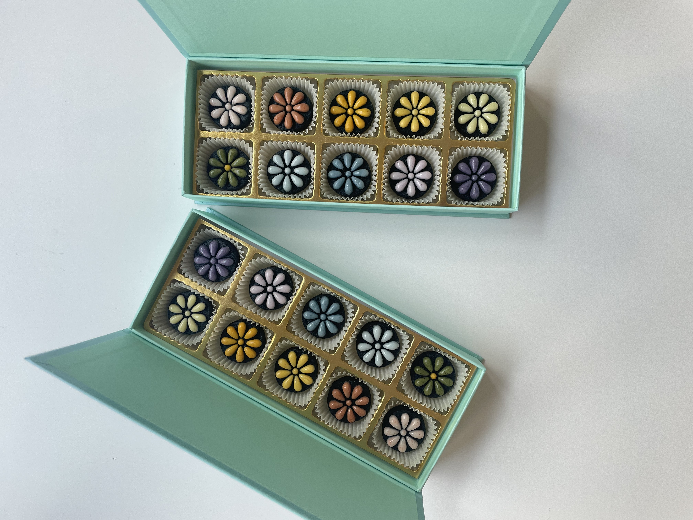

천연 색소를 이용해 알록달록 물들인 "흑임자 꽃다식"
예쁘고 맛도 좋은 흑임자 꽃다식은
차랑도 잘 어울리지만 와인과도 잘 어울리는 디저트랍니다.
입안에 가득 퍼지는 고소함 가득한 흑임자 꽃다식은 건강하기까지한 디저트라
남녀노소 부담없이 드실 수 있는 디저트에요!

입안에 가득 퍼지는 고소함 가득한 흑임자 꽃다식은 건강하기까지한 디저트라
남녀노소 부담없이 드실 수 있는 디저트에요!

먹는방법
따듯한 차와 함께 먹는다